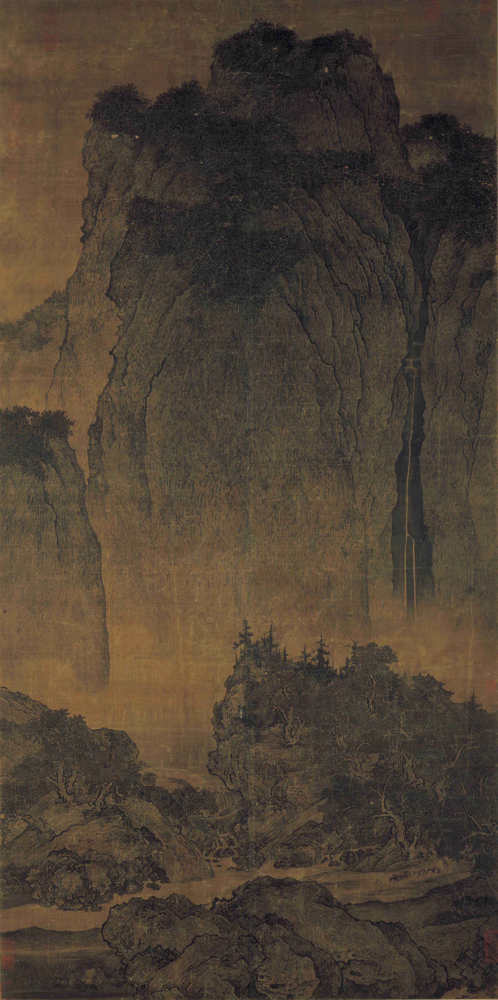
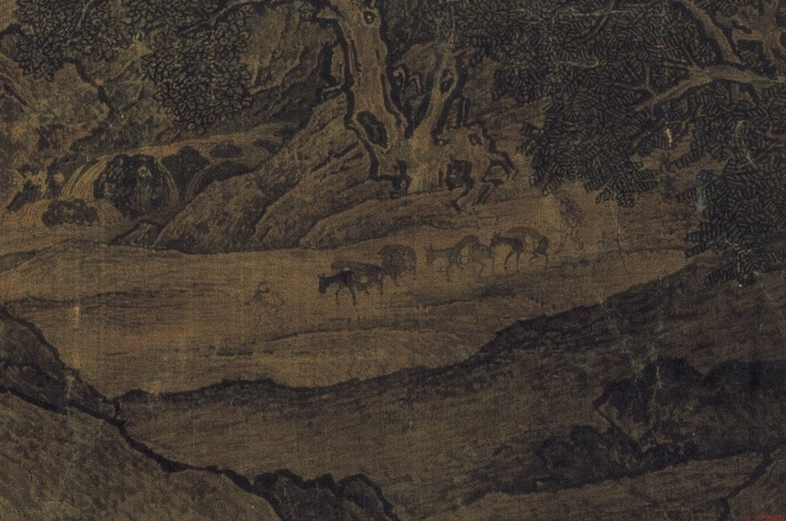

空间认知 · 尺度分析 / 二辩
《溪山行旅图》：尺度为何具有身体分量？


台北故宫藏
画面证据：巍峨主峰占据主要空间，山脚行旅者极其微小，形成强烈的尺度对比。
经验如何生成：微小人物使观者想象人在巨大山川中行走的身体经验，而非只辨认山体的比例。
山体的雄伟因此具有身体感知上的分量：空间审美超出视觉高度的再现。
人物尺度把山川的雄伟，转为可想象的身体经验。
空间认知 · 尺度分析 / 二辩


画面证据：巍峨主峰占据主要空间，山脚行旅者极其微小，形成强烈的尺度对比。
经验如何生成：微小人物使观者想象人在巨大山川中行走的身体经验，而非只辨认山体的比例。
山体的雄伟因此具有身体感知上的分量：空间审美超出视觉高度的再现。